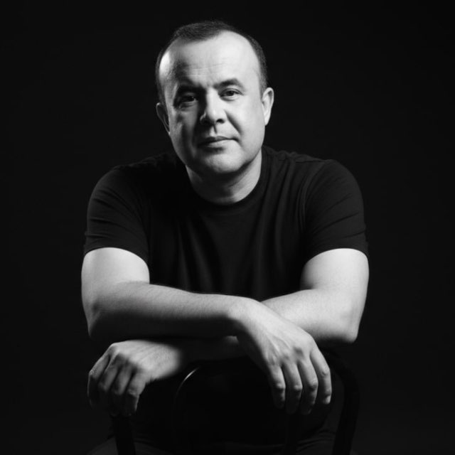

Искандар Хамроқулов
Наманганнинг устазода қизиқчиси, санъат оламининг Асади
Бош саҳифа
Ижод намуналари ▼
Шеърият
Афоризмлар
Латифалар
Ҳаёти ва ижоди
Алоқа 📞
"ИСКАНДАР ҚИЗИҚЧИ" РАДИОСИ
Браузерингиз аудио форматни қўллаб-қувватламайди.
LIVE ЭФИР